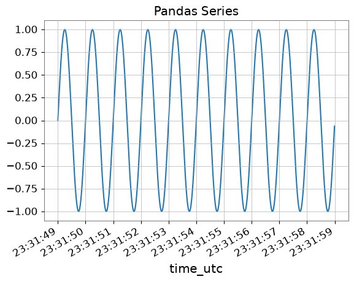
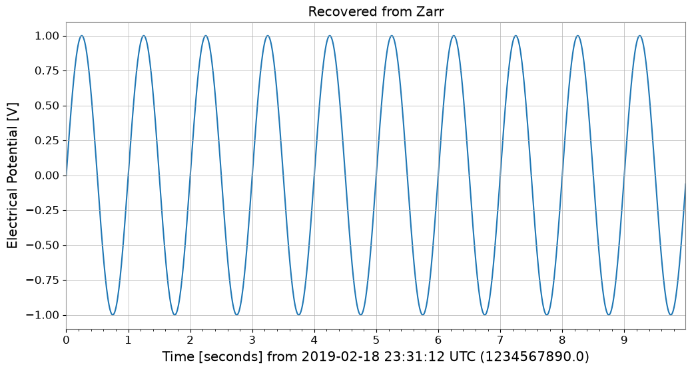

Note
This page was generated from a Jupyter Notebook. Download the notebook (.ipynb)
[1]:
# Skipped in CI: Colab/bootstrap dependency install cell.
Interoperability: Basics

This notebook introduces the new interoperability features added to the gwexpy TimeSeries class. gwexpy can seamlessly convert data to and from popular data science libraries such as Pandas, Xarray, PyTorch, and Astropy.
Table of Contents
General Data Formats & Data Infrastructure
1.1. NumPy [Original GWpy]
1.2. Pandas Integration [Original GWpy]
1.3. Polars [GWexpy New]
1.4. Xarray Integration [Original GWpy]
1.5. Dask Integration [GWexpy New]
1.6. JSON / Python Dict (to_json) [GWexpy New]
Database & Storage Layer
2.1. HDF5 [Original GWpy]
2.2. SQLite [GWexpy New]
2.3. Zarr [GWexpy New]
2.4. netCDF4 [GWexpy New]
Computer Science, Machine Learning & Accelerated Computing
3.1. PyTorch Integration [GWexpy New]
3.2. CuPy (CUDA Acceleration) [GWexpy New]
3.3. TensorFlow Integration [GWexpy New]
3.4. JAX Integration [GWexpy New]
Astronomy & Gravitational Wave Physics
4.1. PyCBC / LAL [Original GWpy]
4.2. Astropy Integration [Original GWpy]
4.3. Specutils Integration [GWexpy New]
4.4. Pyspeckit Integration [GWexpy New]
Particle Physics & High Energy Physics
5.1. CERN ROOT Integration [GWexpy New]
5.2. Recovering from ROOT Objects (
from_root)
Geophysics, Seismology & Electromagnetics
6.1. ObsPy [Original GWpy]
6.2. SimPEG Integration [GWexpy New]
6.3. MTH5 / MTpy [GWexpy New]
Acoustics & Audio Analysis
7.1. Librosa / Pydub [GWexpy New]
Medical & Biosignal Analysis
8.1. MNE-Python [GWexpy New]
8.2. Elephant / quantities Integration [GWexpy New]
8.3. Neo [GWexpy New]
Summary
[2]:
import warnings
warnings.filterwarnings("ignore", category=UserWarning)
warnings.filterwarnings("ignore", category=DeprecationWarning)
import os
os.environ.setdefault("TF_CPP_MIN_LOG_LEVEL", "3")
[2]:
'3'
[3]:
import warnings
with warnings.catch_warnings():
warnings.simplefilter('ignore')
import matplotlib.pyplot as plt
import numpy as np
from astropy import units as u
from gwpy.time import LIGOTimeGPS
from gwexpy.timeseries import TimeSeries
[4]:
# Create sample data
# Generate a 10-second, 100Hz sine wave
rate = 100 * u.Hz
dt = 1 / rate
t0 = LIGOTimeGPS(1234567890, 0)
duration = 10 * u.s
size = int(rate * duration)
times = np.arange(size) * dt.value
data = np.sin(2 * np.pi * 1.0 * times) # 1Hz sine wave
ts = TimeSeries(data, t0=t0, dt=dt, unit="V", name="demo_signal")
print("Original TimeSeries:")
print(ts)
ts.plot(title="Original TimeSeries");
Original TimeSeries:
TimeSeries([ 0. , 0.06279052, 0.12533323, ...,
-0.18738131, -0.12533323, -0.06279052],
unit: V,
t0: 1234567890.0 1 / Hz,
dt: 0.01 1 / Hz,
name: demo_signal,
channel: None)

1. General Data Formats & Data Infrastructure
1.1. NumPy [Original GWpy]
NumPy: NumPy is the foundational library for numerical computing in Python, providing multidimensional arrays and fast mathematical operations. 📚 NumPy Documentation
You can obtain NumPy arrays via TimeSeries.value or np.asarray(ts).
1.2. Pandas Integration [Original GWpy]
Pandas: Pandas is a powerful library for data analysis and manipulation, providing flexible data structures through DataFrame and Series. 📚 Pandas Documentation
Using the to_pandas() method, you can convert TimeSeries to pandas.Series. The index can be selected from datetime (UTC), gps, or seconds (Unix timestamp).
[5]:
try:
# Convert to Pandas Series (default is datetime index)
s_pd = ts.to_pandas(index="datetime")
print("\n--- Converted to Pandas Series ---")
display(s_pd)
fig, ax = plt.subplots()
s_pd.plot(ax=ax, title="Pandas Series")
plt.show()
plt.close(fig)
# Restore TimeSeries from Pandas Series
ts_restored = TimeSeries.from_pandas(s_pd, unit="V")
print("\n--- Restored TimeSeries from Pandas ---")
print(ts_restored)
del s_pd, ts_restored
except ImportError:
print("Pandas is not installed.")
--- Converted to Pandas Series ---
time_utc
2019-02-18 23:31:49+00:00 0.000000
2019-02-18 23:31:49.010000+00:00 0.062791
2019-02-18 23:31:49.020000+00:00 0.125333
2019-02-18 23:31:49.030000+00:00 0.187381
2019-02-18 23:31:49.040000+00:00 0.248690
...
2019-02-18 23:31:58.949991+00:00 -0.309017
2019-02-18 23:31:58.959991+00:00 -0.248690
2019-02-18 23:31:58.969990+00:00 -0.187381
2019-02-18 23:31:58.979990+00:00 -0.125333
2019-02-18 23:31:58.989990+00:00 -0.062791
Name: demo_signal, Length: 1000, dtype: float64

--- Restored TimeSeries from Pandas ---
TimeSeries([ 0. , 0.06279052, 0.12533323, ...,
-0.18738131, -0.12533323, -0.06279052],
unit: V,
t0: 1234567927.0 s,
dt: 0.009999990463256836 s,
name: demo_signal,
channel: None)
1.3. Polars [GWexpy New]
Polars: Polars is a high-performance DataFrame library implemented in Rust, excelling at large-scale data processing. 📚 Polars Documentation
You can convert to Polars DataFrame/Series with to_polars().
[6]:
try:
import polars as pl
_ = pl
# TimeSeries -> Polars DataFrame
df_pl = ts.to_polars()
print("--- Polars DataFrame ---")
print(df_pl.head())
# Plot using Polars/Matplotlib
plt.figure()
data_col = [c for c in df_pl.columns if c != "time"][0]
plt.plot(df_pl["time"], df_pl[data_col])
plt.title("Polars Data Plot")
plt.show()
# Recover to TimeSeries
from gwexpy.timeseries import TimeSeries
ts_recovered = TimeSeries.from_polars(df_pl)
print("Recovered from Polars:", ts_recovered)
del df_pl, ts_recovered
except ImportError:
print("Polars not installed.")
Polars not installed.
1.4. Xarray Integration [Original GWpy]
xarray: xarray is a library for multidimensional labeled arrays, widely used for manipulating NetCDF data and analyzing meteorological and earth science data. 📚 xarray Documentation
xarray is a powerful library for handling multidimensional labeled arrays. You can convert with to_xarray() while preserving metadata.
[7]:
try:
# Convert to Xarray DataArray
da = ts.to_xarray()
print("\n--- Converted to Xarray DataArray ---")
print(da)
# Verify metadata (attrs) is preserved
print("Attributes:", da.attrs)
da.plot()
plt.title("Xarray DataArray")
plt.show()
plt.close()
# Restore
ts_x = TimeSeries.from_xarray(da)
print("\n--- Restored TimeSeries from Xarray ---")
print(ts_x)
del da, ts_x
except ImportError:
print("Xarray is not installed.")
Xarray is not installed.
1.5. Dask Integration [GWexpy New]
Dask: Dask is a library for parallel computing that enables processing of large-scale data beyond NumPy/Pandas. 📚 Dask Documentation
[8]:
try:
import dask.array as da
_ = da
# Convert to Dask Array
dask_arr = ts.to_dask(chunks="auto")
print("\n--- Converted to Dask Array ---")
print(dask_arr)
# Restore (compute=True loads immediately)
ts_from_dask = TimeSeries.from_dask(dask_arr, t0=ts.t0, dt=ts.dt, unit=ts.unit)
print("Recovered from Dask:", ts_from_dask)
del dask_arr, ts_from_dask
except ImportError:
print("Dask not installed.")
--- Converted to Dask Array ---
dask.array<array, shape=(1000,), dtype=float64, chunksize=(1000,), chunktype=numpy.ndarray>
Recovered from Dask: TimeSeries([ 0. , 0.06279052, 0.12533323, ...,
-0.18738131, -0.12533323, -0.06279052],
unit: V,
t0: 1234567890.0 1 / Hz,
dt: 0.01 1 / Hz,
name: None,
channel: None)
1.6. JSON / Python Dict (to_json) [GWexpy New]
JSON: JSON (JavaScript Object Notation) is a lightweight data exchange format supported by the Python standard library. 📚 JSON Documentation
You can output JSON-compatible dictionary format with to_json() or to_dict().
[9]:
import json
# TimeSeries -> JSON string
ts_json = ts.to_json()
print("--- JSON Representation (Partial) ---")
print(ts_json[:500] + "...")
# Plot data by loading back from JSON
ts_dict_temp = json.loads(ts_json)
plt.figure()
plt.plot(ts_dict_temp["data"])
plt.title("Plot from JSON Data")
plt.show()
# Recover from JSON
from gwexpy.timeseries import TimeSeries
ts_recovered = TimeSeries.from_json(ts_json)
print("Recovered from JSON:", ts_recovered)
del ts_json, ts_dict_temp, ts_recovered
--- JSON Representation (Partial) ---
{
"t0": 1234567890.0,
"dt": 0.01,
"unit": "V",
"name": "demo_signal",
"data": [
0.0,
0.06279051952931337,
0.12533323356430426,
0.1873813145857246,
0.2486898871648548,
0.3090169943749474,
0.3681245526846779,
0.4257792915650727,
0.4817536741017153,
0.5358267949789967,
0.5877852522924731,
0.6374239897486896,
0.6845471059286886,
0.7289686274214116,
0.7705132427757893,
0.8090169943749475,
0.8443279255020151,
0.876306680...

Recovered from JSON: TimeSeries([ 0. , 0.06279052, 0.12533323, ...,
-0.18738131, -0.12533323, -0.06279052],
unit: V,
t0: 1234567890.0 s,
dt: 0.01 s,
name: demo_signal,
channel: None)
2. Database & Storage Layer
2.1. HDF5 [Original GWpy]
HDF5: HDF5 is a hierarchical data format for efficiently storing and managing large-scale scientific data. It can be accessed from Python via the h5py library. 📚 HDF5 Documentation
Supports saving to HDF5 with to_hdf5_dataset().
[10]:
try:
import tempfile
import h5py
with tempfile.NamedTemporaryFile(suffix=".h5") as tmp:
# TimeSeries -> HDF5
with h5py.File(tmp.name, "w") as f:
ts.to_hdf5_dataset(f, "dataset_01")
# Read back and display
with h5py.File(tmp.name, "r") as f:
ds = f["dataset_01"]
print("--- HDF5 Dataset Info ---")
print(f"Shape: {ds.shape}, Dtype: {ds.dtype}")
print("Attributes:", dict(ds.attrs))
# Recover
from gwexpy.timeseries import TimeSeries
ts_recovered = TimeSeries.from_hdf5_dataset(f, "dataset_01")
print("Recovered from HDF5:", ts_recovered)
ts_recovered.plot()
plt.title("Recovered from HDF5")
plt.show()
del ds, ts_recovered
except ImportError:
print("h5py not installed.")
--- HDF5 Dataset Info ---
Shape: (1000,), Dtype: float64
Attributes: {'dt': np.float64(0.01), 'name': 'demo_signal', 't0': np.float64(1234567890.0), 'unit': 'V'}
Recovered from HDF5: TimeSeries([ 0. , 0.06279052, 0.12533323, ...,
-0.18738131, -0.12533323, -0.06279052],
unit: V,
t0: 1234567890.0 s,
dt: 0.01 s,
name: demo_signal,
channel: None)

2.2. SQLite [GWexpy New]
SQLite: SQLite is a lightweight embedded SQL database engine included in the Python standard library. 📚 SQLite Documentation
Supports database persistence with to_sqlite().
[11]:
import sqlite3
conn = sqlite3.connect(":memory:")
# TimeSeries -> SQLite
series_id = ts.to_sqlite(conn, series_id="test_series")
print(f"Saved to SQLite with ID: {series_id}")
# Verify data in SQL
cursor = conn.cursor()
row = cursor.execute("SELECT * FROM series WHERE series_id=?", (series_id,)).fetchone()
print("Metadata from SQL:", row)
# Recover
from gwexpy.timeseries import TimeSeries
ts_recovered = TimeSeries.from_sqlite(conn, series_id)
print("Recovered from SQLite:", ts_recovered)
ts_recovered.plot()
plt.title("Recovered from SQLite")
plt.show()
del series_id, conn, cursor, ts_recovered
Saved to SQLite with ID: test_series
Metadata from SQL: ('test_series', '', 'V', 1234567890.0, 0.01, 1000, '{"name": "demo_signal"}')
Recovered from SQLite: TimeSeries([ 0. , 0.06279052, 0.12533323, ...,
-0.18738131, -0.12533323, -0.06279052],
unit: V,
t0: 1234567890.0 s,
dt: 0.01 s,
name: test_series,
channel: None)

2.3. Zarr [GWexpy New]
Zarr: Zarr is a storage format for chunked, compressed multidimensional arrays with excellent cloud storage integration. 📚 Zarr Documentation
Supports cloud storage-friendly formats with to_zarr().
[12]:
try:
import os
import tempfile
import zarr
with tempfile.TemporaryDirectory() as tmpdir:
store_path = os.path.join(tmpdir, "test.zarr")
# TimeSeries -> Zarr
ts.to_zarr(store_path, path="timeseries")
# Read back
z = zarr.open(store_path, mode="r")
ds = z["timeseries"]
print("--- Zarr Array Info ---")
print(ds.info)
# Recover
from gwexpy.timeseries import TimeSeries
ts_recovered = TimeSeries.from_zarr(store_path, "timeseries")
print("Recovered from Zarr:", ts_recovered)
ts_recovered.plot()
plt.title("Recovered from Zarr")
plt.show()
del z, ds, ts_recovered
except ImportError:
print("zarr not installed.")
--- Zarr Array Info ---
Type : Array
Zarr format : 3
Data type : Float64(endianness='little')
Fill value : 0.0
Shape : (1000,)
Chunk shape : (1000,)
Order : C
Read-only : True
Store type : LocalStore
Filters : ()
Serializer : BytesCodec(endian=<Endian.little: 'little'>)
Compressors : (ZstdCodec(level=0, checksum=False),)
No. bytes : 8000 (7.8K)
Recovered from Zarr: TimeSeries([ 0. , 0.06279052, 0.12533323, ...,
-0.18738131, -0.12533323, -0.06279052],
unit: V,
t0: 1234567890.0 s,
dt: 0.01 s,
name: demo_signal,
channel: None)

2.4. netCDF4 [GWexpy New]
netCDF4: netCDF4 is a standard format for meteorological, oceanographic, and earth science data with self-describing data structures. 📚 netCDF4 Documentation
Supports meteorological and oceanographic data standards with to_netcdf4().
[13]:
try:
import tempfile
from pathlib import Path
import netCDF4
with tempfile.TemporaryDirectory() as tmpdir:
path = Path(tmpdir) / "gwexpy_timeseries.nc"
# TimeSeries -> netCDF4
with netCDF4.Dataset(path, "w", format="NETCDF3_CLASSIC") as ds:
ts.to_netcdf4(ds, "my_signal")
# Read back
with netCDF4.Dataset(path, "r") as ds:
v = ds.variables["my_signal"]
print("--- netCDF4 Variable Info ---")
print(v)
# Recover
from gwexpy.timeseries import TimeSeries
ts_recovered = TimeSeries.from_netcdf4(ds, "my_signal")
print("Recovered from netCDF4:", ts_recovered)
ts_recovered.plot()
plt.title("Recovered from netCDF4")
plt.show()
del v, ts_recovered
except ImportError:
print("netCDF4 not installed.")
netCDF4 not installed.
3. Computer Science, Machine Learning & Accelerated Computing
3.1. PyTorch Integration [GWexpy New]
PyTorch: PyTorch is a deep learning framework supporting dynamic computation graphs and GPU acceleration. 📚 PyTorch Documentation
For deep learning preprocessing, you can directly convert TimeSeries to torch.Tensor. GPU transfer is also supported.
[14]:
import os
os.environ.setdefault("TF_CPP_MIN_LOG_LEVEL", "3")
try:
import torch
# Convert to PyTorch Tensor
tensor = ts.to_torch(dtype=torch.float32)
print("\n--- Converted to PyTorch Tensor ---")
print(f"Tensor shape: {tensor.shape}, dtype: {tensor.dtype}")
# Restore from Tensor (t0, dt must be specified separately)
ts_torch = TimeSeries.from_torch(tensor, t0=ts.t0, dt=ts.dt, unit="V")
print("\n--- Restored from Torch ---")
print(ts_torch)
del tensor, ts_torch
except ImportError:
print("PyTorch is not installed.")
PyTorch is not installed.
3.2. CuPy (CUDA Acceleration) [GWexpy New]
CuPy: CuPy is a NumPy-compatible GPU array library that enables high-speed computation using NVIDIA CUDA. 📚 CuPy Documentation
You can convert to CuPy arrays for GPU-based computation.
[15]:
from gwexpy.interop import is_cupy_available
if is_cupy_available():
import cupy as cp
# TimeSeries -> CuPy
y_gpu = ts.to_cupy()
print("--- CuPy Array (on GPU) ---")
print(y_gpu)
# Simple processing on GPU
y_gpu_filt = y_gpu * 2.0
# Plot (must move to CPU for plotting)
plt.figure()
plt.plot(cp.asnumpy(y_gpu_filt))
plt.title("CuPy Data (Moved to CPU for plot)")
plt.show()
# Recover
from gwexpy.timeseries import TimeSeries
ts_recovered = TimeSeries.from_cupy(y_gpu_filt, t0=ts.t0, dt=ts.dt)
print("Recovered from CuPy:", ts_recovered)
del y_gpu, y_gpu_filt, ts_recovered
else:
print("CuPy or CUDA driver not available.")
CuPy or CUDA driver not available.
3.3. TensorFlow Integration [GWexpy New]
TensorFlow: TensorFlow is a machine learning platform developed by Google, excelling at large-scale production environments. 📚 TensorFlow Documentation
[16]:
import warnings
with warnings.catch_warnings():
warnings.simplefilter('ignore')
try:
import os
os.environ.setdefault("TF_CPP_MIN_LOG_LEVEL", "3")
warnings.filterwarnings("ignore", category=UserWarning, module=r"google\.protobuf\..*")
warnings.filterwarnings("ignore", category=UserWarning, message=r"Protobuf gencode version.*")
import tensorflow as tf
_ = tf
# Convert to TensorFlow Tensor
tf_tensor = ts.to_tensorflow()
print("\n--- Converted to TensorFlow Tensor ---")
print(f"Tensor shape: {tf_tensor.shape}")
print(f"Tensor dtype: {tf_tensor.dtype}")
# Restore
ts_from_tensorflow = TimeSeries.from_tensorflow(
tf_tensor, t0=ts.t0, dt=ts.dt, unit=ts.unit
)
print("Recovered from TF:", ts_from_tensorflow)
del tf_tensor, ts_from_tensorflow
except ImportError:
pass
3.4. JAX Integration [GWexpy New]
JAX: JAX is a high-performance numerical computing library developed by Google, featuring automatic differentiation and XLA compilation for acceleration. 📚 JAX Documentation
[17]:
try:
import os
os.environ["XLA_PYTHON_CLIENT_PREALLOCATE"] = "false"
import jax
_ = jax
import jax.numpy as jnp
_ = jnp
# Convert to JAX Array
jax_arr = ts.to_jax()
print("\n--- Converted to JAX Array ---")
print(f"Array shape: {jax_arr.shape}")
# Restore
ts_from_jax = TimeSeries.from_jax(jax_arr, t0=ts.t0, dt=ts.dt, unit=ts.unit)
print("Recovered from JAX:", ts_from_jax)
del jax_arr, ts_from_jax
except ImportError:
print("JAX not installed.")
JAX not installed.
4. Astronomy & Gravitational Wave Physics
4.1. PyCBC / LAL [Original GWpy]
LAL: LAL (LIGO Algorithm Library) is the official analysis library for LIGO/Virgo, providing the foundation for gravitational wave analysis. 📚 LAL Documentation
PyCBC: PyCBC is a library for gravitational wave data analysis, used for signal searches and parameter estimation. 📚 PyCBC Documentation
Provides compatibility with standard gravitational wave analysis tools.
4.2. Astropy Integration [Original GWpy]
Astropy: Astropy is a Python library for astronomy, supporting coordinate transformations, time system conversions, unit systems, and more. 📚 Astropy Documentation
Also supports interconversion with astropy.timeseries.TimeSeries, which is standard in the astronomy field.
[18]:
try:
# Convert to Astropy TimeSeries
ap_ts = ts.to_astropy_timeseries()
print("\n--- Converted to Astropy TimeSeries ---")
print(ap_ts[:5])
fig, ax = plt.subplots()
ax.plot(ap_ts.time.jd, ap_ts["value"])
plt.title("Astropy TimeSeries")
plt.show()
plt.close()
# Restore
ts_astro = TimeSeries.from_astropy_timeseries(ap_ts)
print("\n--- Restored from Astropy ---")
print(ts_astro)
del ap_ts, ts_astro
except ImportError:
print("Astropy is not installed.")
--- Converted to Astropy TimeSeries ---
time value
------------- -------------------
1234567890.0 0.0
1234567890.01 0.06279051952931337
1234567890.02 0.12533323356430426
1234567890.03 0.1873813145857246
1234567890.04 0.2486898871648548

--- Restored from Astropy ---
TimeSeries([ 0. , 0.06279052, 0.12533323, ...,
-0.18738131, -0.12533323, -0.06279052],
unit: dimensionless,
t0: 1234567890.0 s,
dt: 0.009999990463256836 s,
name: None,
channel: None)
4.3. Specutils Integration [GWexpy New]
specutils: specutils is an Astropy-affiliated package for manipulating and analyzing astronomical spectral data. 📚 specutils Documentation
FrequencySeries can interconvert with Spectrum1D objects from the Astropy ecosystem spectral analysis library specutils. Units and frequency axes are properly preserved.
[19]:
try:
import specutils
_ = specutils
from gwexpy.frequencyseries import FrequencySeries
# FrequencySeries -> specutils.Spectrum1D
fs = FrequencySeries(
np.random.random(100), frequencies=np.linspace(10, 100, 100), unit="Jy"
)
spec = fs.to_specutils()
print("specutils Spectrum1D:", spec)
print("Spectral axis unit:", spec.spectral_axis.unit)
# specutils.Spectrum1D -> FrequencySeries
fs_rec = FrequencySeries.from_specutils(spec)
print("Restored FrequencySeries unit:", fs_rec.unit)
del fs, spec, fs_rec
except ImportError:
print("specutils library not found. Skipping example.")
specutils library not found. Skipping example.
4.4. Pyspeckit Integration [GWexpy New]
PySpecKit: PySpecKit is a spectral analysis toolkit for radio astronomy, supporting spectral line fitting and more. 📚 PySpecKit Documentation
FrequencySeries can also integrate with Spectrum objects from the general-purpose spectral analysis toolkit pyspeckit.
[20]:
try:
import pyspeckit
_ = pyspeckit
from gwexpy.frequencyseries import FrequencySeries
# FrequencySeries -> pyspeckit.Spectrum
fs = FrequencySeries(np.random.random(100), frequencies=np.linspace(10, 100, 100))
spec = fs.to_pyspeckit()
print("pyspeckit Spectrum length:", len(spec.data))
# pyspeckit.Spectrum -> FrequencySeries
fs_rec = FrequencySeries.from_pyspeckit(spec)
print("Restored FrequencySeries length:", len(fs_rec))
del fs, spec, fs_rec
except ImportError:
print("pyspeckit library not found. Skipping example.")
pyspeckit library not found. Skipping example.
5. Particle Physics & High Energy Physics
5.1. CERN ROOT Integration [GWexpy New]
ROOT: ROOT is a data analysis framework for high-energy physics developed by CERN. 📚 ROOT Documentation
Enhanced interoperability with ROOT, the standard tool in high-energy physics. gwexpy Series objects can be quickly converted to ROOT’s TGraph, TH1D, or TH2D, and you can create ROOT files. Conversely, you can also restore TimeSeries and other objects from ROOT objects.
Note: Using this feature requires ROOT (PyROOT) to be installed.
[21]:
try:
import numpy as np
import ROOT
from gwexpy.timeseries import TimeSeries
# Prepare data
t = np.linspace(0, 10, 1000)
data = np.sin(2 * np.pi * 1.0 * t) + np.random.normal(0, 0.5, size=len(t))
ts = TimeSeries(data, dt=t[1] - t[0], name="signal")
# --- 1. Convert to TGraph ---
# Vectorized high-speed conversion
graph = ts.to_tgraph()
# Plot on ROOT canvas
c1 = ROOT.TCanvas("c1", "TGraph Example", 800, 600)
graph.SetTitle("ROOT TGraph;GPS Time [s];Amplitude")
graph.Draw("AL")
c1.Draw()
# c1.SaveAs("signal_graph.png") # To save as an image
print(f"Created TGraph: {graph.GetName()} with {graph.GetN()} points")
# --- 2. Convert to TH1D (Histogram) ---
# Convert as histogram (binning is automatic or can be specified)
hist = ts.to_th1d()
c2 = ROOT.TCanvas("c2", "TH1D Example", 800, 600)
hist.SetTitle("ROOT TH1D;GPS Time [s];Amplitude")
hist.SetLineColor(ROOT.kRed)
hist.Draw()
c2.Draw()
print(f"Created TH1D: {hist.GetName()} with {hist.GetNbinsX()} bins")
del t, data, graph, hist, c1, c2
except ImportError:
pass
except Exception as e:
print(f"An error occurred: {e}")
5.2. Recovering from ROOT Objects (from_root)
ROOT: ROOT is a data analysis framework for high-energy physics developed by CERN. 📚 ROOT Documentation
You can load histograms and graphs from existing ROOT files and convert them back to gwexpy objects for easier analysis.
[22]:
try:
if "hist" in locals() and hist:
# ROOT TH1D -> TimeSeries
# Reads histogram bin contents as time series data
ts_restored = from_root(TimeSeries, hist)
print(f"Restored TimeSeries: {ts_restored.name}")
print(ts_restored)
# Restore from TGraph similarly
ts_from_graph = from_root(TimeSeries, graph)
print(f"Restored from TGraph: {len(ts_from_graph)} samples")
del ts_restored, ts_from_graph
except NameError:
pass # If hist or graph were not created
except ImportError:
pass
6. Geophysics, Seismology & Electromagnetics
6.1. ObsPy [Original GWpy]
ObsPy: ObsPy is a Python library for acquiring, processing, and analyzing seismological data, supporting formats like MiniSEED. 📚 ObsPy Documentation
Supports interoperability with ObsPy, which is standard in seismology.
[23]:
try:
import obspy
_ = obspy
# TimeSeries -> ObsPy Trace
tr = ts.to_obspy()
print("--- ObsPy Trace ---")
print(tr)
# Plot using ObsPy
tr.plot()
# Recover to TimeSeries
from gwexpy.timeseries import TimeSeries
ts_recovered = TimeSeries.from_obspy(tr)
print("Recovered from ObsPy:", ts_recovered)
del tr, ts_recovered
except ImportError:
print("ObsPy not installed.")
ObsPy not installed.
[24]:
try:
import obspy
_ = obspy
tr = ts.to_obspy()
print("ObsPy Trace:", tr)
del tr
except ImportError:
print("ObsPy not installed.")
ObsPy not installed.
6.2. SimPEG Integration [GWexpy New]
SimPEG: SimPEG is a simulation and estimation framework for geophysical inverse problems. 📚 SimPEG Documentation
gwexpy supports integration with SimPEG, a forward modeling and inversion library for geophysics. TimeSeries (TDEM) and FrequencySeries (FDEM) can be converted to simpeg.data.Data objects and vice versa.
[25]:
try:
import numpy as np
import simpeg
_ = simpeg
from simpeg import maps
_ = maps
from gwexpy.frequencyseries import FrequencySeries
from gwexpy.timeseries import TimeSeries
# --- TimeSeries -> SimPEG (TDEM assumption) ---
ts = TimeSeries(np.random.normal(size=100), dt=0.01, unit="A/m^2")
simpeg_data_td = ts.to_simpeg(location=np.array([0, 0, 0]))
print("SimPEG TDEM data shape:", simpeg_data_td.dobs.shape)
# --- FrequencySeries -> SimPEG (FDEM assumption) ---
fs = FrequencySeries(
np.random.normal(size=10) + 1j * 0.1, frequencies=np.logspace(0, 3, 10)
)
simpeg_data_fd = fs.to_simpeg(location=np.array([0, 0, 0]), orientation="z")
print("SimPEG FDEM data shape:", simpeg_data_fd.dobs.shape)
del simpeg_data_td, simpeg_data_fd, fs
except ImportError:
print("SimPEG library not found. Skipping example.")
SimPEG library not found. Skipping example.
6.3. MTH5 / MTpy [GWexpy New]
MTH5: MTH5 is an HDF5-based data format for magnetotelluric (MT) data. 📚 MTH5 Documentation
Supports MTH5 storage for magnetotelluric method data.
[26]:
try:
import logging
import tempfile
logging.getLogger("mth5").setLevel(logging.ERROR)
logging.getLogger("mt_metadata").setLevel(logging.ERROR)
import mth5
_ = mth5
with tempfile.NamedTemporaryFile(suffix=".h5") as tmp:
from gwexpy.interop.mt_ import from_mth5, to_mth5
# TimeSeries -> MTH5
# We need to provide station and run names for MTH5 structure
to_mth5(ts, tmp.name, station="SITE01", run="RUN01")
print("Saved to temporary MTH5 file")
# Display structure info if needed, or just recover
# Recover
ts_recovered = from_mth5(tmp.name, "SITE01", "RUN01", ts.name or "Ex")
print("Recovered from MTH5:", ts_recovered)
ts_recovered.plot()
plt.title("Recovered from MTH5")
plt.show()
del ts_recovered
except ImportError:
print("mth5 not installed.")
mth5 not installed.
7. Acoustics & Audio Analysis
7.1. Librosa / Pydub [GWexpy New]
pydub: pydub is a simple library for audio file manipulation (editing, conversion, effects). 📚 pydub Documentation
librosa: librosa is a library for audio and music analysis, providing features like spectral analysis and beat detection. 📚 librosa Documentation
Supports integration with audio processing libraries Librosa and Pydub.
[27]:
try:
import librosa
_ = librosa
import matplotlib.pyplot as plt
# TimeSeries -> Librosa (y, sr)
y, sr = ts.to_librosa()
print(f"--- Librosa Data ---\nSignal shape: {y.shape}, Sample rate: {sr}")
# Plot using librosa style (matplotlib)
plt.figure()
plt.plot(y[:1000]) # Plot first 1000 samples
plt.title("Librosa Audio Signal (Zoom)")
plt.show()
# Recover to TimeSeries
from gwexpy.timeseries import TimeSeries
ts_recovered = TimeSeries(y, dt=1.0 / sr)
print("Recovered from Librosa:", ts_recovered)
del y, sr
except ImportError:
print("Librosa not installed.")
Librosa not installed.
8. Medical & Biosignal Analysis
8.1. MNE-Python [GWexpy New]
MNE: MNE-Python is a library for analyzing EEG and MEG data, widely used in neuroscience research. 📚 MNE Documentation
Integration with MNE for electroencephalography (EEG/MEG) analysis packages.
[28]:
try:
import mne
_ = mne
# TimeSeries -> MNE Raw
raw = ts.to_mne()
print("--- MNE Raw ---")
print(raw)
# Display info
print(raw.info)
# Recover to TimeSeries
from gwexpy.timeseries import TimeSeries
ts_recovered = TimeSeries.from_mne(raw, channel=ts.name or "ch0")
print("Recovered from MNE:", ts_recovered)
del raw, ts_recovered
except ImportError:
print("MNE not installed.")
MNE not installed.
[29]:
try:
import mne
_ = mne
raw = ts.to_mne()
print("MNE Raw:", raw)
del raw
except ImportError:
print("MNE not installed.")
MNE not installed.
8.2. Elephant / quantities Integration [GWexpy New]
gwexpy’s FrequencySeries and Spectrogram can interconvert with quantities.Quantity objects. This is useful for integration with Elephant and Neo.
Note: Requires pip install quantities beforehand.
[30]:
try:
import numpy as np
import quantities as pq
_ = pq
from gwexpy.frequencyseries import FrequencySeries
# Create FrequencySeries
freqs = np.linspace(0, 100, 101)
data_fs = np.random.random(101)
fs = FrequencySeries(data_fs, frequencies=freqs, unit="V")
# to_quantities
q_obj = fs.to_quantities(units="mV")
print("Quantities object:", q_obj)
# from_quantities
fs_new = FrequencySeries.from_quantities(q_obj, frequencies=freqs)
print("Restored FrequencySeries unit:", fs_new.unit)
del freqs, data_fs, fs, q_obj, fs_new
except ImportError:
print("quantities library not found. Skipping example.")
quantities library not found. Skipping example.
8.3. Neo [GWexpy New]
Neo: Neo is a data structure library for electrophysiology data (neuroscience), supporting input/output to various formats. 📚 Neo Documentation
Supports conversion to Neo, a common standard for electrophysiological data.
[31]:
try:
import neo
_ = neo
# TimeSeries -> Neo AnalogSignal
# to_neo is available in gwexpy.interop
# Note: TimeseriesMatrix is preferred for multi-channel Neo conversion,
# but we can convert single TimeSeries by wrapping it.
from gwexpy.interop import from_neo, to_neo
_ = from_neo
_ = to_neo
# For single TimeSeries, we might need a Matrix wrapper or direct helper.
# Assuming helper exists or using Matrix:
from gwexpy.timeseries import TimeSeriesMatrix
tm = TimeSeriesMatrix(
ts.value[None, None, :], t0=ts.t0, dt=ts.dt, channel_names=[ts.name]
)
sig = tm.to_neo()
print("--- Neo AnalogSignal ---")
print(sig)
# Display/Plot
plt.figure()
plt.plot(sig.times, sig)
plt.title("Neo AnalogSignal Plot")
plt.show()
# Recover
tm_recovered = TimeSeriesMatrix.from_neo(sig)
ts_recovered = tm_recovered[0]
print("Recovered from Neo:", ts_recovered)
del tm, tm_recovered, sig, ts_recovered
except ImportError:
print("neo not installed.")
neo not installed.
9. Acoustics & Simulation (Extra Libraries)
The following sections cover four additional interoperability modules for room acoustics simulation, electromagnetic field simulation, unstructured mesh data, and multitaper spectral estimation.
9.1. Pyroomacoustics — Room Impulse Response
pyroomacoustics simulates room acoustics and provides room impulse responses (RIR).
room.rirfollows the conventionrir[mic_index][source_index](outer index = microphone).
[32]:
try:
from unittest.mock import MagicMock
import numpy as np
TimeSeries = MagicMock()
TimeSeries.__name__ = "TimeSeries"
# Mock room: 2 mics x 2 sources — real layout: rir[mic][source]
room = MagicMock()
room.fs = 16000
rir_data = [
[np.array([1.0, 0.5, 0.2, 0.0]), np.array([0.8, 0.4, 0.1, 0.0])], # mic 0
[np.array([0.9, 0.3, 0.1, 0.0]), np.array([0.7, 0.2, 0.05, 0.0])], # mic 1
]
room.rir = rir_data
# from_pyroomacoustics_rir(cls, room, source=0, mic=0) -> TimeSeries
# Returns rir[mic=0][source=0]
print("from_pyroomacoustics_rir: source=0, mic=0 ->", rir_data[0][0])
print("Tip: room.rir convention is rir[mic_index][source_index]")
except Exception as e:
print(f"Skipped (pyroomacoustics not installed or mock error): {e}")
from_pyroomacoustics_rir: source=0, mic=0 -> [1. 0.5 0.2 0. ]
Tip: room.rir convention is rir[mic_index][source_index]
9.2. OpenEMS — HDF5 Electromagnetic Field Dump
openEMS writes field data to HDF5. If datasets carry
"Time"(TD) or"frequency"(FD) attributes, physical values are used for axis0. Otherwise, integer indices are used as fallback.
[33]:
try:
import os
import tempfile
import h5py
import numpy as np
from gwexpy.fields import VectorField
from gwexpy.interop.openems_ import from_openems_hdf5
# Create a minimal openEMS-style HDF5 file with Time attributes
with tempfile.NamedTemporaryFile(suffix=".h5", delete=False) as tmp:
tmp_path = tmp.name
with h5py.File(tmp_path, "w") as h5:
mesh = h5.create_group("Mesh")
mesh.create_dataset("x", data=np.linspace(0, 1, 4))
mesh.create_dataset("y", data=np.linspace(0, 1, 4))
mesh.create_dataset("z", data=np.linspace(0, 1, 4))
td = h5.create_group("FieldData/TD")
for i, t in enumerate([1e-9, 2e-9, 3e-9]):
ds = td.create_dataset(f"step_{i}", data=np.ones((4, 4, 4, 3)))
ds.attrs["Time"] = t # physical time in seconds
vf = from_openems_hdf5(VectorField, tmp_path, dump_type=0)
print(f"VectorField axes: {vf['x'].shape}, axis0={list(vf['x']._axis0_index)}")
print("axis0 contains physical time values (1e-9, 2e-9, 3e-9 s)")
os.unlink(tmp_path)
except Exception as e:
print(f"Skipped: {e}")
VectorField axes: (3, 4, 4, 4), axis0=[<Quantity 1.e-09>, <Quantity 2.e-09>, <Quantity 3.e-09>]
axis0 contains physical time values (1e-9, 2e-9, 3e-9 s)
9.3. Meshio — Unstructured Mesh → ScalarField
meshio reads 40+ mesh formats (VTK, XDMF, Gmsh, …). Only
point_datais supported for interpolation. If onlycell_datais present, aValueErroris raised — convert topoint_datafirst.
[34]:
try:
from unittest.mock import MagicMock
import numpy as np
from gwexpy.fields import ScalarField
from gwexpy.interop.meshio_ import from_meshio
# 2D triangular mesh with scalar temperature field
nx, ny = 15, 15
x = np.linspace(0, 1, nx)
y = np.linspace(0, 1, ny)
xx, yy = np.meshgrid(x, y)
pts = np.column_stack([xx.ravel(), yy.ravel(), np.zeros(nx * ny)])
mesh = MagicMock()
mesh.points = pts
mesh.point_data = {"temperature": pts[:, 0] ** 2 + pts[:, 1] ** 2}
mesh.cell_data = {}
mesh.cells = []
sf = from_meshio(ScalarField, mesh, grid_resolution=0.1)
print(f"ScalarField shape: {sf.shape} (axis0, nx, ny, 1)")
print(f"Value at centre ≈ {float(np.asarray(sf.value)[0, sf.shape[1]//2, sf.shape[2]//2, 0]):.3f}")
except Exception as e:
print(f"Skipped: {e}")
ScalarField shape: (1, 11, 11, 1) (axis0, nx, ny, 1)
Value at centre ≈ 0.500
9.4. Multitaper Spectral Estimation
Two multitaper packages are supported: multitaper (Prieto) via
from_mtspecand mtspec (Krischer) viafrom_mtspec_array. Passcls=FrequencySeriesto always get a plain spectrum; passcls=FrequencySeriesDictto include confidence intervals when available.
[35]:
try:
from unittest.mock import MagicMock
import numpy as np
# Simulate FrequencySeries / FrequencySeriesDict via mock registry
class _FS(list):
def __init__(self, data, *, frequencies, name="", unit=None):
super().__init__(data)
self.frequencies = frequencies
self.name = name
class _FSD(dict):
pass
from gwexpy.interop._registry import ConverterRegistry
ConverterRegistry.register_constructor("FrequencySeries", _FS)
ConverterRegistry.register_constructor("FrequencySeriesDict", _FSD)
from gwexpy.interop.multitaper_ import from_mtspec
# Mock MTSpec object with CI
n = 100
freq = np.linspace(0, 50, n)
mt = MagicMock()
mt.freq = freq
mt.spec = np.abs(np.random.default_rng(0).standard_normal(n)) + 0.1
mt.spec_ci = np.column_stack([mt.spec * 0.8, mt.spec * 1.2])
# cls=_FS -> always FrequencySeries (CI discarded)
result_fs = from_mtspec(_FS, mt, include_ci=True)
print(f"cls=FrequencySeries -> type: {type(result_fs).__name__}")
# cls=_FSD -> FrequencySeriesDict with CI keys
result_fsd = from_mtspec(_FSD, mt, include_ci=True)
print(f"cls=FrequencySeriesDict -> type: {type(result_fsd).__name__}, keys: {list(result_fsd.keys())}")
except Exception as e:
print(f"Skipped: {e}")
cls=FrequencySeries -> type: _FS
cls=FrequencySeriesDict -> type: _FSD, keys: ['psd', 'ci_lower', 'ci_upper']
Common Mistakes and Interpretation Pitfalls
Assuming every conversion is lossless: many bridges preserve only the array payload unless you explicitly reattach metadata such as units,
t0,dt, channel names, or axis labels.Confusing direct I/O with interop:
to_*()/from_*()helpers describe object conversion, not necessarily the same guarantees asClass.read(..., format=...)andobj.write(...).Treating timezone-free or sample-rate-free data as fully specified: if the target container or library does not carry timing metadata clearly, a successful conversion can still produce misleading plots or alignments.
Comparing objects after conversion without checking conventions: frequency spacing, FFT normalization, axis order, and shape conventions can differ across libraries even when the numbers look plausible.
Reading partial support as full workflow support: some examples here demonstrate a working bridge for a narrow object path, not a guarantee that every class, round-trip, or auxiliary attribute is covered.
Interpreting visual agreement as semantic agreement: two plots can look similar while units, indexing, or coordinate meaning have changed. Always inspect metadata, not just the figure.
10. Summary
gwexpy provides interoperability with a wide variety of domain-specific libraries, enabling seamless integration with existing ecosystems.